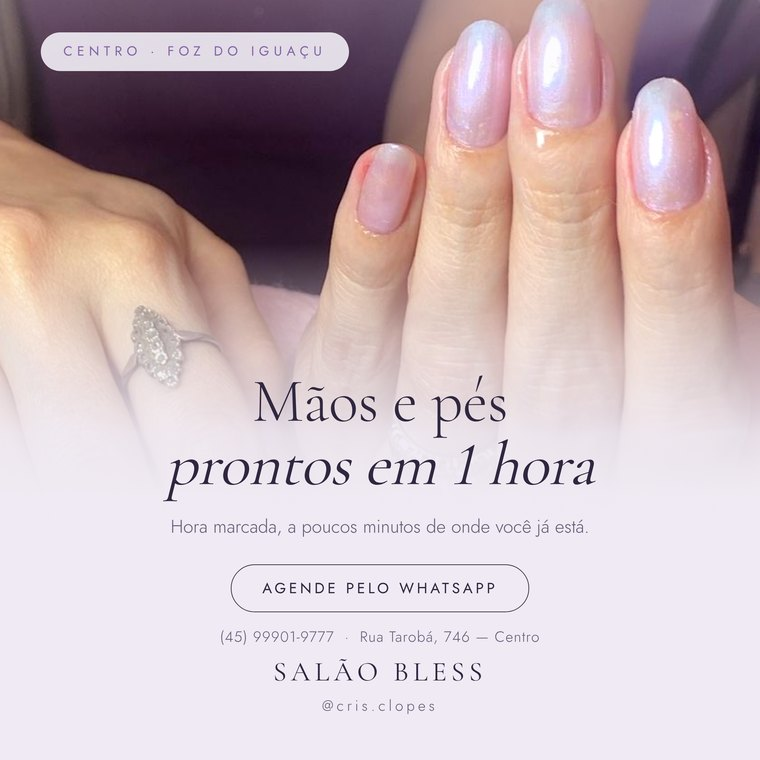
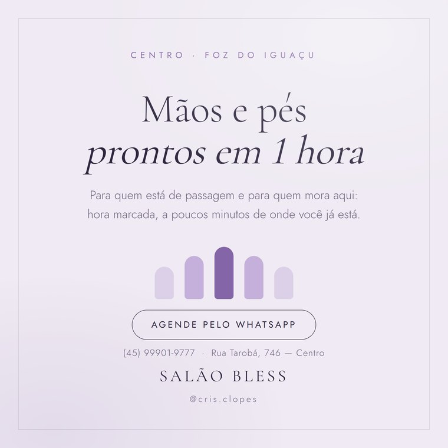

Passo a passo para o anúncio aparecer para quem está perto do salão — turista hospedado no Centro e quem trabalha ou mora ali por perto. Leva uns 10 minutos.
Confira estas três coisas uma única vez. Depois nunca mais precisa.
Poste a arte com a legenda. Não esqueça de marcar a localização — na tela antes de publicar, toque em "Adicionar localização" e escolha Foz do Iguaçu ou a rua do salão.
Deixe o post respirar e pegar as primeiras curtidas de quem já segue. O Instagram entrega melhor um anúncio que já tem algum movimento.
O botão fica logo abaixo da foto, no seu próprio post.
Vai aparecer uma lista. Escolha "Mais mensagens" e depois WhatsApp.
Essas opções gastam o dinheiro mostrando o post para muita gente que não vai fazer nada. Você quer conversa no WhatsApp, não número bonito.
Vai aparecer a opção "Automático" — não use. O automático espalha o anúncio pela cidade inteira. Toque em "Criar seu próprio" e dê um nome, tipo "Centro de Foz".
Toque em Locais → apague o que estiver lá → digite Rua Tarobá, 746, Foz do Iguaçu e escolha o endereço no mapa (não a cidade inteira).
Depois puxe a bolinha do raio até 3 km. Mais que isso começa a pegar bairro de gente que não vem até o Centro.
Escolha "Pessoas que moram aqui ou estão visitando" — ou, se tiver, "Pessoas visitando esta localização". Se escolher só "pessoas que moram aqui", o anúncio deixa de fora exatamente o turista hospedado a três quadras do salão. É esse público que a gente quer pegar em Foz.
Toque em "Interesses" e adicione, um por um:
Gênero: Mulheres (ou "Todos", se o salão também atende homens). Idade: de 22 a 55 anos.
Comece pequeno: R$ 15 a R$ 20 por dia, durante 5 dias (dá R$ 75 a R$ 100 no total). Não precisa gastar mais para testar.
Confira na tela final se aparece o endereço certo e o raio de 3 km. O Instagram leva de alguns minutos até 24 horas para aprovar.
De quinta a sábado. É quando o turista está na cidade e decidindo o que fazer no dia seguinte.
Publique entre 11h e 13h ou entre 18h e 20h.
Responda o mais rápido possível — turista decide na hora. Se demorar duas horas, ela já achou outro salão.
Nunca responda só o valor. Responda o valor junto com um horário: “Mão e pé fica R$ __, e tenho hoje às 15h. Reservo pra você?”. Preço sozinho encerra a conversa; preço com horário abre o agendamento.
Abra o post e toque em "Ver resultados". O único número que importa é quantas conversas no WhatsApp chegaram.
1. Cadastrar o Salão Bless no Google Meu Negócio com fotos e
horário. Turista pesquisa "manicure perto de mim" no Google Maps antes de abrir
o Instagram.
2. Pedir para toda cliente satisfeita deixar uma avaliação no Google.
É o que decide entre você e o salão da esquina.
Publique a arte 1 primeiro. Espere 2 ou 3 dias e publique a arte 2, com a mesma legenda. Turbine só a que trouxer mais conversa no WhatsApp.

